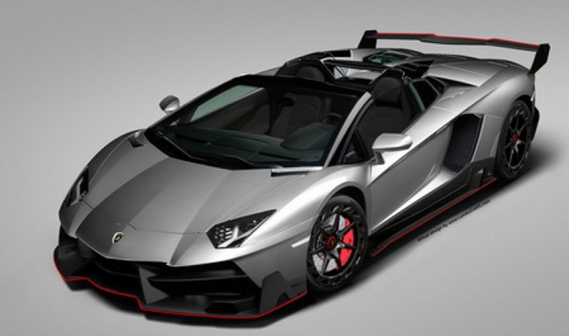

Halu adalah kependekan dari halusinasi. Halusinasi adalah posisi dimana kita berimajinasi tentang sesuatu, bisa saja tentang hal - hal yang tidak mungkin ada atau tidak mungkin dilakukan. Kita berandai - andai dan membayangkan sesuatu.
Menurut KBBI (Kamus Besar Bahasa Indonesia) halusinasi/ha·lu·si·na·si/ n adalah pengalaman indra tanpa adanya perangsang pada alat indra yang bersangkutan, misalnya mendengar suara tanpa ada sumber suara tersebut
Inilah keHaluuuan ku yang gabuts
| NO | Keinginan | harga | Gambaran |
|---|---|---|---|
| 1. | Rumah mewah | Rp 5.000.000.000 | |
| 2. | Mobil mahal | Rp 51.200.000.000 |  |
| 3. | Jet pribadi | Rp 560.000.000.000 |
Video adalah teknologi untuk menangkap, merekam, memproses, mentransmisikan dan menata ulang gambar bergerak. Biasanya menggunakan film seluloid, sinyal elektronik, atau media digital.
Menurut KBBI (Kamus Besar Bahasa Indonesia) video/vi·deo/ /vidéo/ n 1 bagian yang memancarkan gambar pada pesawat televisi; 2 rekaman gambar hidup atau program televisi untuk ditayangkan lewat pesawat televisi.
Tonton Video diBawah INI!!!